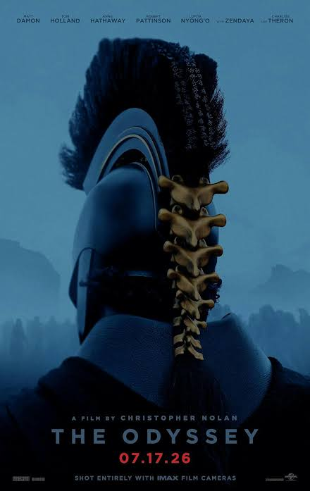

Page 2
Welcome to page 2 of the Quick Movie Summaries website! Here, you'll find other movie summaries that are some of the best movies of the year.
The Odyssey
The Odyssey is an epic poem attributed to the ancient Greek poet Homer. It tells the story of the hero Odysseus and his long journey home after the fall of Troy. The poem is divided into 24 books and follows Odysseus as he faces numerous challenges, including encounters with mythical creatures, gods, and goddesses. The Odyssey explores themes of heroism, loyalty, cunning, and the human struggle against fate. It is considered one of the greatest works of literature in Western history and has had a profound influence on storytelling and literature throughout the centuries.

Interstellar
Interstellar is a science fiction film directed by Christopher Nolan. The story is set in a dystopian future where Earth is facing environmental collapse, and humanity's survival is at stake. A team of astronauts, led by Cooper, embarks on a journey through a wormhole in search of a new habitable planet. The film explores themes of love, sacrifice, time dilation, and the human spirit's resilience. Interstellar combines stunning visuals, scientific concepts, and emotional storytelling to create a thought-provoking cinematic experience that delves into the mysteries of space and the human condition.